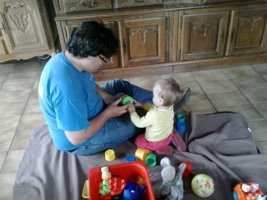
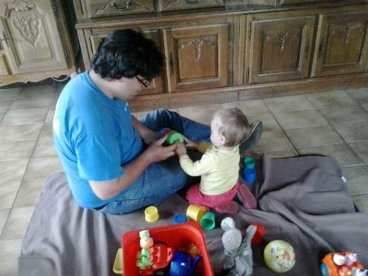
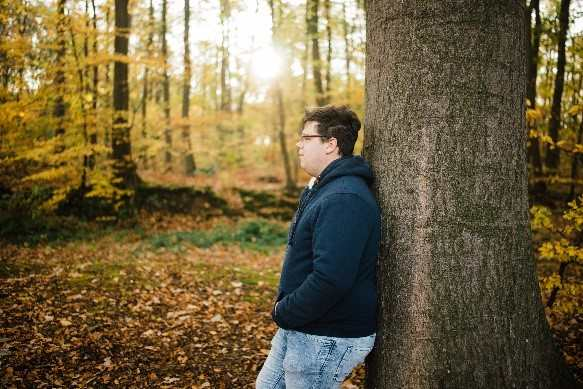
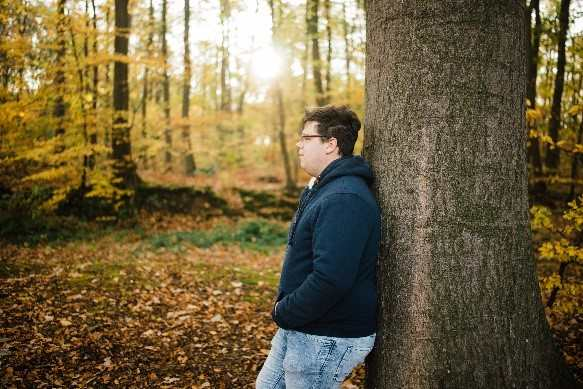

Wie ben ik?
Welkom op mijn website, vooraleer je mijn website verder bekijkt zal ik mij eerst even voorstellen. Mijn naam is Jan-Pieter Van Calster, ik ben 28 jaar en onlangs verhuisd naar Morkhoven. Samen met mijn vrouw Anita Truyen leg ik de ‘finishing touch’ aan ons eigen stekje.
Mijn leven liep niet altijd was niet altijd even gemakkelijk. Door problemen thuis, kreeg ik onvoldoende ondersteuning in tijdens mijn studie. Daarnaast zorgden ook problemen op school voor een vroegtijdig schoolverlaten. Hierdoor heb ik dan ook tot op heden geen diploma in mijn bezit. Al ben ik van plan hier verandering in te brengen.
Op professioneel vlak ben ik eerst van plan om mijn diploma graduaat in programmeren te behalen. Tot die tijd blijf ik werkzaam bij mijn huidige werkgever IOK afvalbeheer.
Momenteel volg ik het eerste jaar van de graduaatsopleiding programmeren. Hoewel ik mijn huidige job zeer graag doe, voel ik dat ik deze job niet kan blijven uitvoeren tot mijn pensioen. Door het gebrek aan diploma liggen de minder zwaar belastende alternatieven niet voor het grijpen. Daarom kreeg ik de raad van mijn vrouwtje om een opleiding te volgen. Waarbij mijn keuze uiteindelijk op programmeren viel. Je vraagt je misschien af: ‘Waarom Programmeren, het is totaal iets anders dan de huidige job die je zo leuk vind?’ Wel, thuis ben ik graag bezig computerprogramma’s. Ik ben dan ook de persoon waarop de ganse familie terugvalt bij computerproblemen. Daarnaast maak ik ook graag eigen creaties op bijvoorbeeld adobe photoshop. Enkele voorbeelden hiervan kan je bekijken op de website.
Ik creëer niet enkel graag dingen met een computer, maar ben ook een gedreven muzikant. Ik bespeel de saxofoon en de elektrische gitaar. Andere hobby’s van mij zijn dartsen en gamen. Naast mijn hobby’s heb ik nog verscheidene andere interesses zoals sporten, tuinieren en reizen. Je kan mij nog beter leren kennen door een kijkje te nemen op mijn website.
Skils

 

 
